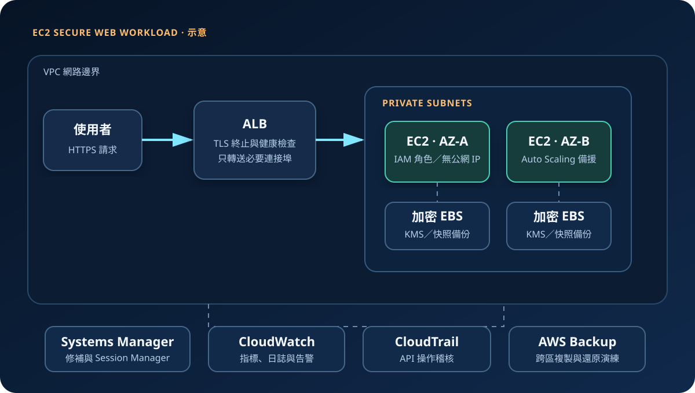

AWS 基礎介紹 02 · 2026-08-23
Amazon EC2：虛擬伺服器、選型與安全責任
作者：Dr. William｜雲端與資訊安全實務工作者
Amazon Elastic Compute Cloud（Amazon EC2）在 AWS 雲端提供可調整規模的虛擬伺服器。使用者可選擇處理器、記憶體、儲存、網路、作業系統與購買模式，並保有比多數受管運算服務更高的主機控制權；相對地，也承擔較多作業系統、套件、服務與弱點管理責任。
服務定位：EC2 適合需要完整作業系統控制、既有軟體相容性、固定背景程序或特殊運算規格的工作負載。它不是「開機後就自動安全與高可用」的伺服器，高可用、修補、監控與備份仍須在架構中明確設計。
核心概念：一台執行個體由哪些元件組成
- 執行個體與規格：執行個體是虛擬伺服器；執行個體類型定義 vCPU、記憶體、網路與儲存特性。通用型適合一般網站，運算、記憶體或加速運算型則針對特定瓶頸。
- AMI：Amazon Machine Image 是啟動範本，包含作業系統及選定軟體。AMI 的來源、修補狀態與生命週期會直接影響供應鏈風險。
- EBS 與 Instance Store：EBS 是可獨立於執行個體存在的區塊儲存；Instance Store 是主機附加的暫時性儲存，停止、休眠或終止等事件可能造成資料不可保留，不能當成唯一持久資料來源。
- VPC 與網路介面：子網路、路由、安全群組、網路 ACL、公有或私有 IP 共同決定連線路徑。安全群組是具狀態的虛擬防火牆。
- IAM 執行個體角色：應用程式透過角色取得短期憑證存取其他 AWS 服務，避免把長期憑證存入主機或程式碼。
- 生命週期：啟動、停止、重新啟動與終止的計費及資料結果不同。終止保護、EBS 刪除設定與自動復原流程應在上線前確認。
適合與不適合的使用情境
適合
- 既有單體應用依賴特定 Linux 或 Windows 套件、代理程式、連接埠或檔案系統。
- 需要自訂核心、GPU、高記憶體、HPC 或授權軟體等特定主機規格。
- 長時間穩定運行，團隊具備映像管理、修補、監控與容量規劃能力。
- 需要以 Auto Scaling、負載平衡器與多可用區組成彈性主機群。
不適合
- 短暫、事件驅動且無須管理伺服器的工作，Lambda 或其他受管服務可能更簡潔。
- 團隊無力持續修補作業系統與中介軟體，卻直接把主機暴露至網際網路。
- 只需要物件儲存、受管資料庫或靜態網站，卻為此維護整台伺服器。
- 單台主機被誤當成高可用架構；EC2 執行個體仍可能因故障、維護或區域事件中斷。
示意故事案例：把校務報名系統移到 EC2
以下為示意案例，非真實客戶案例。某教育單位有一套依賴特定執行環境的舊版報名系統，短期內無法改寫成容器或 Serverless。團隊以受控 AMI 建立 EC2 Launch Template，將兩台執行個體放在不同可用區的私有子網路，前方使用 Application Load Balancer。資料寫入受管資料庫，不存放在 Instance Store；EBS 使用 KMS 加密並透過 AWS Backup 建立復原點。
管理人員不開放 SSH 至網際網路，而是以 IAM Identity Center、MFA 與 Systems Manager Session Manager 進行受稽核維運。CloudWatch 收集主機與應用指標，CloudTrail 記錄控制平面 API。報名尖峰由 Auto Scaling 增加執行個體，離峰再縮減。
建置與運作流程
- 定義需求：確認作業系統、CPU、記憶體、I/O、延遲、資料敏感度、RTO 與 RPO。
- 設計網路：建立跨可用區子網路；無須直接對外的 EC2 放在私有子網路，由 ALB 或受控入口接收流量。
- 建立映像與範本：使用可信 AMI，套用安全基準、修補與必要代理程式，再以 Launch Template 固化設定。
- 設定身分與機密：附加最小權限 IAM 角色。資料庫密碼與 API 機密放入 Secrets Manager 或 Parameter Store，不寫入 AMI、User Data、環境檔或原始碼。
- 建立儲存與加密：EBS 預設加密，依需求選擇 KMS 金鑰與磁碟類型，設定快照與保留政策。
- 限制連線：安全群組以來源安全群組或必要 CIDR 開放最少連接埠；避免將 SSH、RDP 或管理介面對全網公開。
- 部署與健康檢查：使用 Auto Scaling 跨可用區部署，讓負載平衡器只送流量至健康執行個體。
- 觀測與回復：CloudWatch 告警涵蓋 CPU、磁碟、狀態檢查與應用錯誤；CloudTrail、修補、備份還原與事件應變持續演練。
成本、可用性與維運考量
- 成本組成：除執行個體運算外，還要計入 EBS 容量與 IOPS、快照、資料傳輸、Elastic IP、負載平衡器、NAT Gateway、監控及備份。
- 購買模式：On-Demand 彈性最高；Savings Plans 適合可預測用量；Spot 價格較低但可能被中斷，僅適合可容錯工作。選型前應使用 AWS Pricing Calculator 與實際監控數據。
- 停止不代表零成本：執行個體停止後通常不再收取執行個體用量，但 EBS、快照及部分網路資源仍可能計費。
- 高可用：單台 EC2 與單一可用區都可能成為單點失效。關鍵服務至少跨可用區，並以無狀態應用、外部資料層與健康檢查降低替換成本。
- 災難復原：多可用區不等於跨區復原。依 RTO/RPO 決定是否跨區複製 AMI、EBS 快照、備份與資料，並實際驗證還原。
EC2 特有的資安風險與控制
- 主機與軟體弱點：客戶須修補客體作業系統、Web 伺服器、套件與應用。建立映像管線、修補時限、弱點掃描與淘汰機制。
- 管理埠暴露：對
0.0.0.0/0或::/0開放 SSH/RDP 會增加暴力攻擊面。優先採 Session Manager；必要管理來源應限縮並記錄。 - 執行個體中繼資料：應用弱點可能被利用存取角色憑證。使用 IMDSv2、限制 hop limit，並讓執行個體角色維持最小權限。
- 過度權限角色：遭入侵主機可沿用其 IAM 角色。角色只允許工作負載必要動作與資源，配合 CloudTrail 偵測異常 API。
- AMI 與 User Data 洩密：不可把密碼、私鑰、長期憑證或 Token 寫入映像、快照、User Data 與啟動日誌；改由 Secrets Manager 或 Parameter Store 在執行時授權取得。
- 未加密磁碟與快照：啟用 EBS 預設加密與 KMS 控制，限制快照分享；跨帳號或跨區複製時重新檢查金鑰政策。
- 刪除或加密勒索：備份帳戶、保存庫鎖定、最小刪除權限及跨區副本可降低單一帳號遭破壞的衝擊；復原程序仍需定期演練。
共同責任邊界
AWS 負責資料中心、實體主機、網路與虛擬化層，也負責維護支撐 EC2 的雲端基礎設施。客戶負責選擇與設定 AMI、客體作業系統修補、應用程式、IAM 角色、安全群組、資料分類、EBS 加密、日誌、備份及事件回應。AWS 提供可用區與服務能力，但客戶仍須決定是否跨可用區、如何容錯及如何復原。
上線前可執行檢查清單
- □ 根帳號與高權限身分已啟用 MFA；人員透過 IAM Identity Center 或短期角色操作。
- □ 執行個體角色採最小權限，沒有在主機、User Data 或程式碼保存長期憑證。
- □ 非必要 EC2 沒有公有 IP；安全群組未向全網開放 SSH、RDP、資料庫與管理介面。
- □ 管理連線優先使用 Session Manager，Session 與 API 活動可稽核。
- □ AMI 來源可信、IMDSv2 為必要條件，作業系統與套件有明確修補時限。
- □ EBS 與快照使用 KMS 加密；Secrets Manager 或 Parameter Store 管理機密。
- □ CloudWatch 收集系統與應用日誌並設定告警；CloudTrail 涵蓋所有使用區域並受保護。
- □ 關鍵服務跨可用區，負載平衡與 Auto Scaling 健康檢查已測試。
- □ 備份保留、刪除保護、跨帳號或跨區復原符合 RTO/RPO，且還原演練成功。
- □ AWS Budgets、成本異常偵測、標籤與閒置資源盤點已啟用。
AWS 官方一手來源
- Amazon EC2 User Guide｜What is Amazon EC2?（查閱：2026-08-23）
- Amazon EC2 User Guide｜Security in Amazon EC2（查閱：2026-08-23）
- Amazon EC2 User Guide｜Security group rules（查閱：2026-08-23）
- Amazon EC2 User Guide｜Amazon EBS encryption（查閱：2026-08-23）
- AWS｜Amazon EC2 pricing（查閱：2026-08-23）
- AWS｜Shared Responsibility Model（查閱：2026-08-23）
內容說明
本文依查閱日可用的 AWS 官方文件整理，作為基礎學習與架構討論材料；實際部署仍須依區域支援、最新價格、組織政策、法規與風險評估調整。